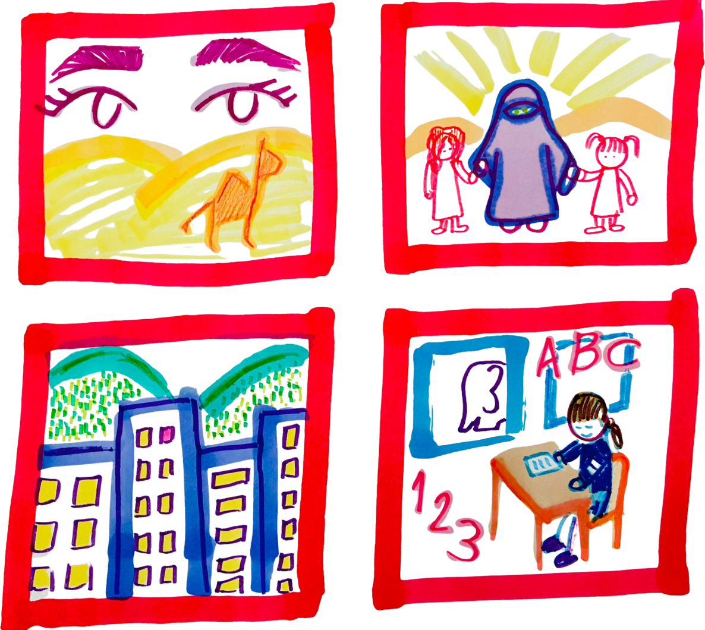
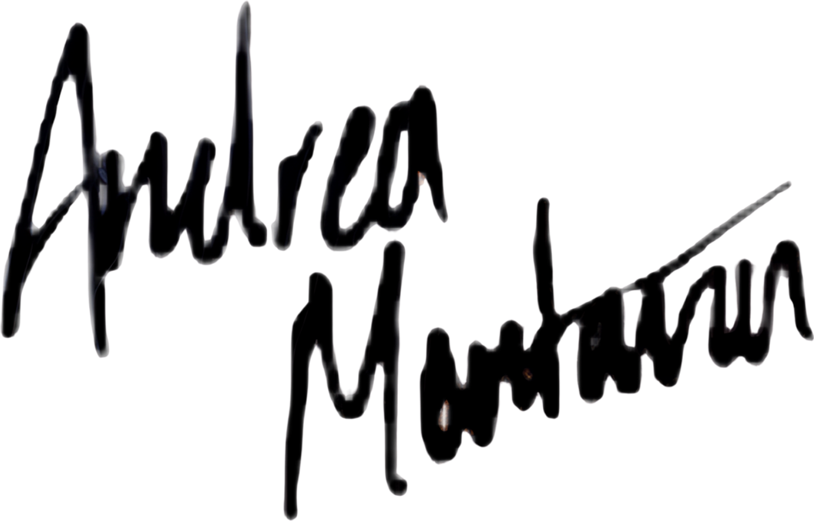
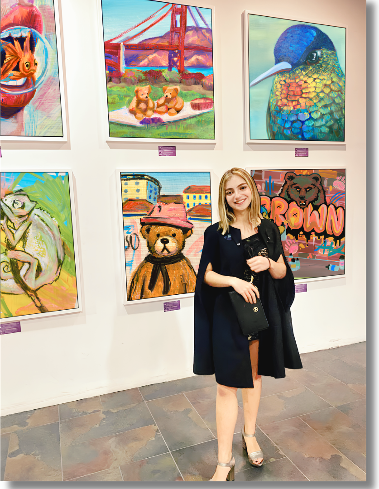

Art has always been how I make sense of things before I have the words for them. Every painting is a question I didn't know I was asking.
Working across acrylics, oils, and pencil, to express cultural symbolism, cityscapes, and pop art. It is the language of the soul, and how I make sense of this beautiful world.
Andrea Montaña Lamus is a Computer Science and Artificial Intelligence student, and a visual artist with roots in Colombia and Venezuela. Her art portfolio was accepted into Parsons School of Design, developed under the mentorship of Lina Sinisterra, recognized as a top 50 AP Art instructor by the CollegeBoard.
